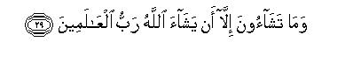

بسم الله الرحمن الرحيم
Sayyid Abul Ala Maududi - Tafhim al-Qur'an - The Meaning of the Qur'an
 81.
Surah At Takwir (The Folding Up)
81.
Surah At Takwir (The Folding Up)
It is derived from the word kuwwirat in the first verse. Kuwwirat is passive voice from takvir in the past tense, and means "that which is folded up", thereby implying that it is a Surah in which the "folding up" has been mentioned:
The subject matter and the style clearly show that it is one of the earliest Surahs to be revealed at Makkah.
It has two themes: the Hereafter and the institution of Prophethood.
In the first six verses the first stage of the Resurrection has been mentioned when the sun will lose its light, the stars will scatter, the mountains will be uprooted and will disperse, the people will become heedless of their dearest possessions, the beasts of the jungle will be stupefied and will gather together, and the seas will boil up. Then in the next seven verses the second stage has been described when the souls will be reunited with the bodies, the records will be laid open, the people will be called to account for their crimes, the heavens will be unveiled, and Hell and Heaven will be brought into full view. After depicting the Hereafter thus, man has been left to ponder his own self and deeds, saying: "Then each man shall himself know what he has brought with him."
After this the theme of Prophethood has been taken up. In this the people of Makkah have been addressed, as if to say "Whatever Muhammad (upon whom be Allah's peace and blessings) is presenting before you, is not the bragging of a madman, nor an evil suggestion inspired by Satan, but the word of a noble, exalted and trustworthy messenger sent by God, whom Muhammad (upon whom be Allah's peace and blessings) has seen with his own eyes in the bright horizon of the clear sky in broad day light. Whither then are you going having turned away from this teaching?"

In the name of Allah, the Compassionate, the Merciful.

[1-14] When the sun is folded up,1 and when the stars scatter,2 and when the mountains are set in motion,3 and when the ten month pregnant she-camels are left untended,4 and when the beasts are gathered together,5 and when the oceans are set ablaze,6 and when7 the souls are reunited (with their bodies),8 and when the infant girl, buried alive, is asked for what crime she was slain,9 and when the records are unfolded, and when the veil of heaven is removed,10 and when Hell is set blazing, and when Paradise is brought near,11 then each person shall know what he has brought with him.

[15-29] But not so!12 I swear by the retreating and hiding stars, and the night when it departed, and the dawn when it breathed up,13 that this indeed is the Word of a noble Messenger,14 who has great power,15 and has high ranks with the Owner of the Throne: there he is obeyed16 and held as trustworthy.17 And (O people of Makkah), your Companion18 is not mad. He has seen that Messenger on the clear horizon.19 And he is not stingy in the matter of conveying the (knowledge of the) unseen (to the people).20 And this is not the word of an accursed satan.21 Whither then are you going? This is an Admonition to all the people of the world, to each one of you, who wishes to follow the Straight Path.22 But your willing is of no avail unless Allah, Lord of the worlds, wills so.23
1This is a matchless metaphor for causing the sun to lose its light. Takwir means to fold up; hence takwir al- `amamah for folding up the turban on the head. Here, the light which radiates from the sun and spreads throughout the solar system has been likened to the turban and it has been said that on the Resurrection Day the turban will be folded up about the sun and its radiation will fade.
2That is, when the force which is keeping them in their orbits and positions is loosened and all the stars and planets will scatter in the universe. The word inkidar also indicates that they will not only scatter away but will also grow dark.
3In other words, the earth also will lose its force of gravity because of which the mountains have weight and are firmly set in the earth. Thus, when there is no more gravity the mountains will be uprooted from their places and becoming weightless will start moving and flying as the clouds move in the atmosphere.
4This was by far the best way of giving an idea of the severities and horrors of Resurrection to the Arabs. Before the buses and trucks of the present day there was nothing more precious for the Arabs than the she-camel just about to give birth to her young. In this state she was most sedulously looked after and cared for, so that she is not lost, stolen, or harmed in any way. The people's becoming heedless of such she-camels, in fact, meant that at that time they would be so stunned as to become unmindful of their most precious possessions.
5When a general calamity befalls the world, all kinds of beasts and animals gather together in one place. Then neither the snake bites, nor the tiger kills and devours.
6The word sujjirat as used in the original in passive voice from tasjir in the past tense. Tasjir means to kindle fire in the oven. Apparently it seems strange that on the Resurrection Day fire would blaze up in the oceans. But if the truth about water is kept in view, nothing would seem strange. It is a miracle of God that He combined oxygen and hydrogen, one of which helps kindle the fire and the other gets kindled of itself and by the combination of both He created a substance like water which is used to put out fire. A simple manifestation of Allah's power is enough to change this composition of water so that the two gases are separated and begin to burn and help cause a blaze, which is their basic characteristic.
7From here begins mention of the second stage of Resurrection.
8That is, men will be resurrected precisely in the state as they lived in the world before death with body and soul together.
9The style of this verse reflects an intensity of rage and fury inconceivable in common life. The parents who buried their daughters alive, would be so contemptible in the-sight of Allah that they would not be asked: "Why did you kill the innocent infant?" But disregarding them the innocent girl will be asked: "For what crime were you slain?" And she will tell her story how cruelly she had been treated by her barbarous parents and buried alive. Besides, two vast themes have been compressed into this brief verse, which though not expressed in words, are reflected by its style and tenor. First that in it the Arabs have been made to realize what depths of moral depravity they have touched because of their ignorance in that they buried their own children alive; yet they insist that they would persist in the same ignorance and would not accept the reform that Muhammad (upon whom be Allah's peace) was trying to bring about in their corrupted society. Second, that an express argument has been given in it of the necessity and inevitability of the Hereafter. The case of the infant girl who was buried alive, should be decided and settled justly at some tune, and there should necessarily be a time when the cruel people who committed this heinous crime, should be called to account for it, for there was none in the world to hear the cries of complaint raised by the poor soul. This act was looked upon with approval by the depraved society; neither the parents felt any remorse for it, nor anybody in the family censured them, nor the society took any notice of it. Then, should this monstrosity remain wholly unpunished in the Kingdom of God?
This barbaric custom of burying the female infants alive had become widespread in ancient Arabia for different reasons. One reason was economic hardship because of which the people wanted to have fewer dependents so that they should not have to bear the burden of bringing up many children. Male offspring were brought up in the hope that they would later help in earning a living, but the female offspring were killed for the fear that they would have to be reared till they matured and then given away in marriage. Second, the widespread chaos because of which the male children were brought up in order to have more and more helpers and supporters; but daughters were killed because in tribal wars they had to be protected instead of being useful in any way for defense. Third, another aspect of the common chaos also was that when the hostile tribes raided each other and captured girls they would either keep them as slave-girls or sell them to others. For these reasons the practice that had become common in Arabia was that at childbirth a pit was kept dug out ready for use by the woman so that if a girl was born, she was immediately cast into it and buried alive. And if sometimes the mother was not inclined to act thus, or the people of the family disapproved of it, the father would rear her for some time half-heartedly, and then finding time would take her to the desert to be buried alive. This tyranny and hard-heartedness was once described by a person before the Holy Prophet (upon whom be peace) himself. According to a Hadith related in the first chapter of Sunan Darimi, a man came to the Holy Prophet and related this incident of his pre-Islamic days of ignorance: "I had a daughter who was much attached to me. When I called her, she would come running to me. One day I called her and took her out with me. On the way we came across a well. Holding her by the hand I pushed her into the well. Her last words that I heard were: Oh father, oh father!!" Hearing this the Holy Prophet (upon whom be peace) wept and tears started falling from his eyes One of those present on the occasion said: O man, you have grieved the Holy Prophet. The Holy Prophet said: Do not stop him, let him question about what he feels so strongly now. Then the Holy Prophet asked him to narrate his story once again. When he narrated it again the Holy Prophet wept so bitterly that his beard became we with tears. Then he said to the man: "Allah has forgiven that you did in the days of ignorance: now turn to Him in repentance.'
It is not correct to think that the people of Arabia had no feeling of the baseness of this hideous, inhuman act. Obviously, no society, however corrupted it may be, can be utterly devoid of the feeling that such tyrannical acts are evil. That is why the Holy Qur'an has not dwelt upon the vileness of this act, but has only referred to it in awe-inspiring words to the effect: "A time will come when the girl who was buried alive, will be asked for what crime she was slain?" The history of Arabia also shows that many people in the pre-Islamic days of ignorance had a feeling that the practice was vile and wicked. According to Tabarani, Sa`sa'ah bin Najiyah al-Mujashi`i, grandfather of the poet, Farazdaq, said to the Holy Prophet: "O Messenger of Allah, during the days of ignorance I have done some good works also among which one is that I saved 360 girls from being buried alive: I gave two camels each as ransom to save their lives. Shall I get any reward for this?" The Holy Prophet replied; "Yes, there is a reward for you, and it is this that Allah has blessed you with Islam."
As a matter of fact, a great blessing of the blessings of Islam is that it not only did put an end to this inhuman practice in Arabia but even wiped out the concept that the birth of a daughter was in any way a calamity, which should be endured unwillingly. On the contrary, Islam taught that bringing up daughters, giving them good education and enabling them to become good housewives, is an act of great merit and virtue. The way the Holy Prophet (upon whom be peace) changed the common concept of the people in respect of girls can be judged from his many sayings which have been reported in the Hadith. As for example, we reproduce some of these below:
"The person who is put to a test because of the birth of the daughters and then he treats them generously, they will become a means of rescue for him from Hell." (Bukhari, Muslim).
"The one who brought up two girls till they attained their maturity, will appear along with me on the Resurrection Day ... Saying this the Holy Prophet jointed and raised his fingers. (Muslim).
"The one who brought up three daughters, or sisters, taught then good manners and treated them with kindness until they became self-sufficient. Allah will make Paradise obligatory for him. A man asked: what about two, O Messenger of Allah? The Holy Prophet replied: the same for two." Ibn `Abbas, the reporter of the Hadith, says: "Had the people at that time asked in respect of one daughter, the Holy Prophet would have also given the same reply about her. " (Sharh as-Sunnh).
"The one who has a daughter born to him and he does not bury her alive, nor keeps her in disgrace, nor prefers his son to her, Allah will admit him to Paradise." (Abu Da'ud).
"The one who has three daughters born to him, and he is patient over them, and clothes them well according to his means, they will become a means of rescue for him from Hell. " (Bukhari, Al-Adab al-Mufrad, Ibn Majah).
"The Muslim who has two daughters and he looks after them well, they will lead him to Paradise." (Bukhari: Al-Adab al-Mufrad).
This is the teaching which completely changed the viewpoint of the people about girls not only in Arabia but among all the nations of the world, which later become blessed with Islam.
10That is, everything which is hidden from view now will become visible. Now one can only see empty space, or the clouds, hanging dust, the moon, the sun or stars, but at that time the Kingdom of God will appear in full view before the people, without any veil in between, in its true reality.
11That is, in the Plain of Resurrection, when the hearing of the cases of the people will be in progress, the blazing fire of Hell also will be in full view, and Paradise also with all its blessings will be visible to all, so that the wicked should know what they are being deprived of and where they are going to be cast, and the righteous as well should know what they are being saved from and with what being blessed and honored.
12That is, "You are not correct that what is being presented in the Qur'an is the bragging of an insane person, or the evil suggestion of a devil."
13That for which the oath has been sworn, has been stated in the following verses. The oath means: "Muhammad (upon whom be Allah's peace and blessings) has not seen a vision in darkness, but when the stars had disappeared, the night had departed and the bright morning had appeared, he had seen the Angel of God in the open sky. Therefore, what he tells you is based on his own personal observation and on the experience that he had in full senses in the full light of day."
14"A noble messenger": the Angel who brought down Revelation, as becomes explicit from the following verses. "The word of a noble messenger" does not mean that the Qur'an is the word of the Angel himself, but, as the context shows, of Him Who appointed him a messenger. In Al-Haaqqah: 40, likewise, the Qur'an has been called the word of Muhammad (upon whom be Allah's peace and blessings), and there too it does not mean that it is the Holy Prophet's own composition, but describing it as "the word of an honorable messenger", it has been made clear that the Holy Prophet is presenting it in his capacity as the Messenger of God and not as Muhammad bin `Abdullah. At both places, the Word has been attributed to the Angel and to Muhammad (upon whom be Allah's peace) on the ground that the message of Allah was being delivered to Muhammad (upon whom be Allah's peace) by the Angel and to the people by Muhammad (upon whom be Allah's peace). (For further explanation, see E.N. 22 of Al-Haaqqah).
15Surah An-Najm: 45, deals with the same theme, thus "It is but a Revelation which is sent down to him. One, mighty in power, has taught him. " As to what is implied by the mighty powers of the Angel Gabriel (peace be upon him) is ambiguous. In any case it at least shows that he is distinguished even among the angels because of his extraordinary powers. In Muslim (kitab- al-iman) Hadrat `A'ishah has reported the Holy Prophet's saying to the effect: "I have twice seen Gabriel in his real shape and form: his glorious being was encompassing the whole space between the earth and the heavens." According to the tradition reported from Hadrat `Abdullah bin Mas`ud in Bukhari. Muslim, Tirmidhi and Musnad Ahmad, the Holy Prophet (upon whom be peace) had seen Gabriel with his six hundred wings. From this one can have an idea of his mighty powers.
16That is, he is the chief of the angels and all angels work under his command.
17That is, he is not one who would tamper with Divine Revelation, but is so trustworthy that he conveys intact whatever he receives from God.
18"Your Companion": the Holy Messenger of Allah (upon whom be peace). Here, making mention of the Holy Prophet as the companion of the people of Makkah, they have been made to realize that the Holy Prophet was no stranger for them. He was not an outsider but a man of their own clan and tribe; he had lived his whole life among them; even their children knew that he was a very wise man. They should not be so shameless as to call such a man a mad man. (For further explanation, see E.N.'s 2, 3 of An-Najm).
19In An-Najm: 7-9, this observation of the Holy Prophet (upon whom be peace) has been described in greater detail, (For explanation, see E.N.'s 7. 8 of An-Najm).
20That is, "The Holy Messenger of Allah does not conceal anything from you. Whatever of the unseen realities are trade known to him by Allah, whether they relate to the essence and attributes of Allah, the angels, life after death and Resurrection, or to the Hereafter, Heaven and Hell, he conveys everything to you without change.
21That is, "You are wrong in thinking that some satan comes and whispers these words into the ear of Muhammad (upon whom be Allah's peace and blessings). It does not suit Satan that he should divert man from polytheism, idol worship, atheism and sin and turn him to God-worship and Tauhid, make man realize that he should live a life of responsibility and accountability to God instead of living an irresponsible, care-free life, should forbid man to adopt practices of ignorance, injustice, immorality and wickedness and lead him to a clean life of justice, piety and high morals." (For further explanation, see Ash-Shua`ra': 210-212 along with E.N.'s 130 to 133, and w. 221-223 along with E.N.'s 140,141).
22In other words, although this is an Admonition for all mankind, only such a person can benefit by it, who is himself desirous of adopting piety and righteousness. Man's being a seeker after truth and a lover of right is the foremost condition of his gaining any benefit from it.
23This theme has already occurred in Al-Muddaththir: 56 and Ad-Dahr: 20 above. For explanation, see E.N. 41 of Al-Muddaththir.